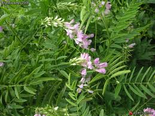

Rue des chèvres ou Sainfoin d'Espagne ou Lilas d'Espagne ou Galega

Rue des chèvres ou Sainfoin d'Espagne ou Lilas d'Espagne ou Galega (Galega officinalis, Galega orientalis de la famille des Légumineuses)
Toxique plus toxité de contact (photosensibilisation).
Partie toxique pour les chats en général et le Korat en particulier :
Toute la plante même la racine.
Symptômes du processus pathologique :
Respiration difficile, toux, forts battements de coeur, crampes musculaires, mousse sortant de la gueules et du nez, crampes fébriles.
Origine de la toxicité (principe actif) :
Divers alcaloïdes (galégine et hydroxygalégine) ainsi qu'un glucoside flavonique, la galutéoline.